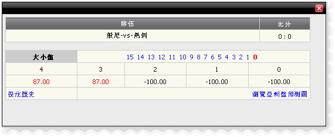

亞洲盤/ 大小/ 滾球
定義:
查看代理贏輸根據占成注單投注種類之亞洲盤/ 大小/ 上半場滾球或全場.
亞洲盤/ 大小/ 滾球 _01
與法國丙組聯賽，會員賭羅德茲-vs-阿勒斯,詳情如下
- 第一注單: 金額=10,賠率= 0.85, 投注種類:大小,全場,代理占成=50%
-->代理收入根據占成= -(金額*占成 )= -10*50% =
-5
- 第二注單: 金額=10,賠率= -0.81, 投注種類:大小,上半場,代理占成=50%
--> 代理收入根據占成= -(金額*占成)= -10*50%*0.81 =
-4
注意:
- 根据亚洲盘占成 = (主总金额- 客总金额) *代理占成
- 代理收入根据大小占成= (总大金额 - 总小金额) *代理占成
- 签署“_”是指总营业额给客/小大过于总营业额给主/ 大
- 赔率< 0 那么代理收入金额= 金额*代理占成*赔率
- 赔率> 0那么代理收入金额= 金额*代理占成
預測功能
這項功能可以幫助代理找出贏輸金額根據主場得分，客場得分。要查看贏輸預測，點擊“+”號。在這個例子中member01 在主隊投注200 - 波恩利亞洲盤= 2.5，賠率0.87，投注種類 =大，代理人占成= 50％。
亞洲盤/ 大小/ 滾球_02
彈出窗口將顯示如下:

預測
這是根據大小盤預測和詳情如下
- 1:-100 -->如果(主得分 + 客得分) = 1那麼代理將贏: 200*50% = 100
- 2:-100 -->如果(主得分 + 客得分) = 2 那麼代理將贏 : 200*50% = 100
- 3: 87 --> 如果(主得分 + 客得分) = 3 那麼代理將輸 : 200*0.87*0.5 =
87
- 4: 87 --> 如果(主得分 + 客得分) = 4 那麼代理將輸 : 200*0.87*0.5 =
87
注意:
對於亞洲盤預測 , 結果將會計算主得分相減客得分.